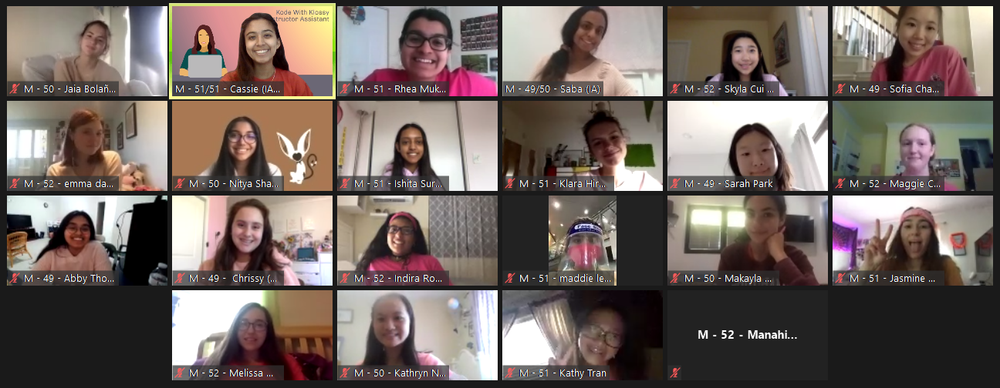
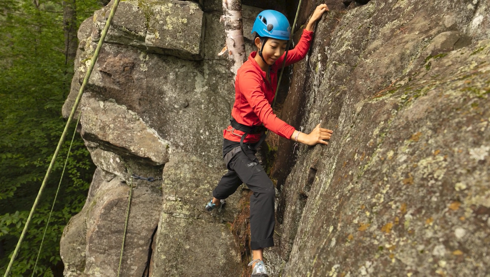

What we do
PAIR is a service project that plants seeds of ambition in young girls by connecting them with inspirational women. Each year, we bring together middle and high school girls with women mentors across industries — and through the diversity of their career journeys, we show every mentee that there is no single right way forward.
Who We Are
Skyla's Why
I (Skyla) have experienced exactly twice, being in a group of strangers and feeling with conviction, I can do anything.

The first was a summer in high school at Kode With Klossy. I had just finished taking “Intro to Programming” in school and, after a semester of being the only girl in the class, vowed to never code again. That summer, I somehow found myself, once again, coding—this time at an all-girls coding camp. Even more bizarre, I found myself falling in love with the exact activity I had not-so-long-ago dreaded. It was then that I decided to study computer science in college.


The second was just a week ago—rock climbing in the Adirondack Mountains with First Descents. This was a week of outdoor adventure with other young adult cancer survivors. The months leading up, I was repeatedly asked, “Like, on real rocks?” Yes, on real rocks, with strangers, across the country, and I'd never rock climbed before. Admittedly, I was extremely daunted going in. I left the Adirondacks, however, feeling not only that I can climb giant rocks and beat cancer, but that if I can do those two things, there's nothing I can't do.
I have pondered a lot why the same act of learning to code can yield opposite results. How did Kode With Klossy turn loathe into love? How did First Descents turn fear into spark? I've identified two factors:
1. Nothing but support
At Kode With Klossy, a single girl's success was the entire camp's success. Questions were met with an it's-okay-you-don't-understand-yet-let's-figure-this-out-together attitude. Zoom screens (this was during the Covid era) were filled with hundreds of confetti and clapping emojis after each final presentation.
At First Descents, every climb up a crag was met with loud cheers from the entire camp. Each night, we gathered around a campfire and gave shoutouts—for the big milestones and the minute, but equally important, little wins.
2. Real conversations
The hallmark of a Kode With Klossy program is discussion about the gender divide in the tech industry. Girls freely ask questions about what it's like working in a male-dominated field, and mentors respond without sugar coating their experiences.
After shoutouts, evenings at First Descents concluded with people sharing their cancer stories, struggles and lots of tears included.
While it may seem scary to talk vulnerably about heavy topics, it is precisely through first acknowledging challenges that you build up the necessary courage to go forth and face them head-on.
When you're put in a fully-supportive, non-competitive environment where everyone solely wants nothing but the best for you, (1) you gain the audacity to be curious, and (2) you can rule out environmental factors from possible reasons you don't like something.
And, when you're in a group that holds space for real talk, you get the opportunity to acknowledge fear and doubt and still choose to move forward, because to be brave is not to never be scared but to choose to do things even when you're scared.
PAIR is my part in passing on a similarly life-changing, magical experience—one where girls leave feeling confidently, I can do anything.